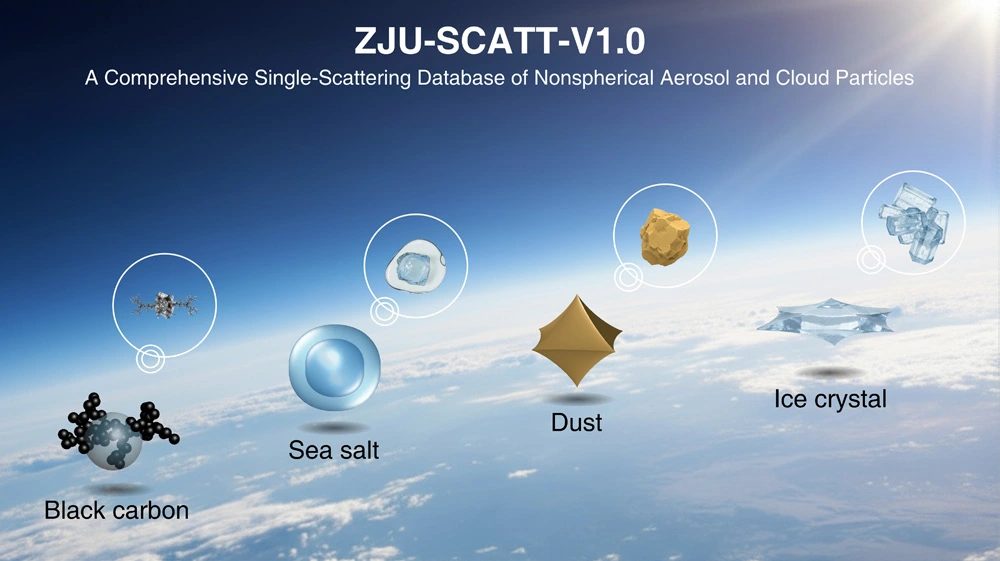
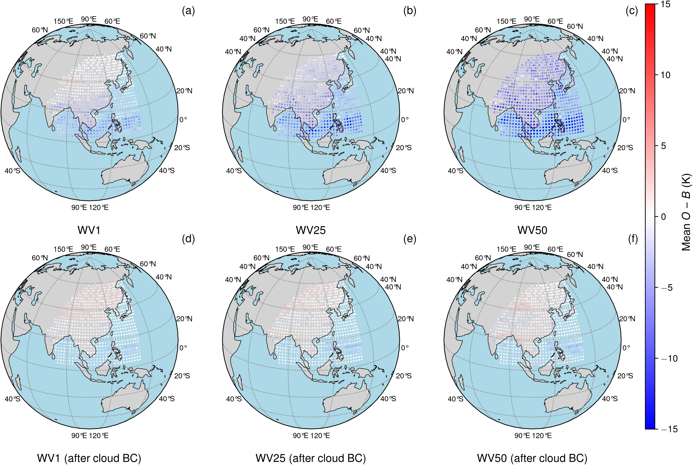
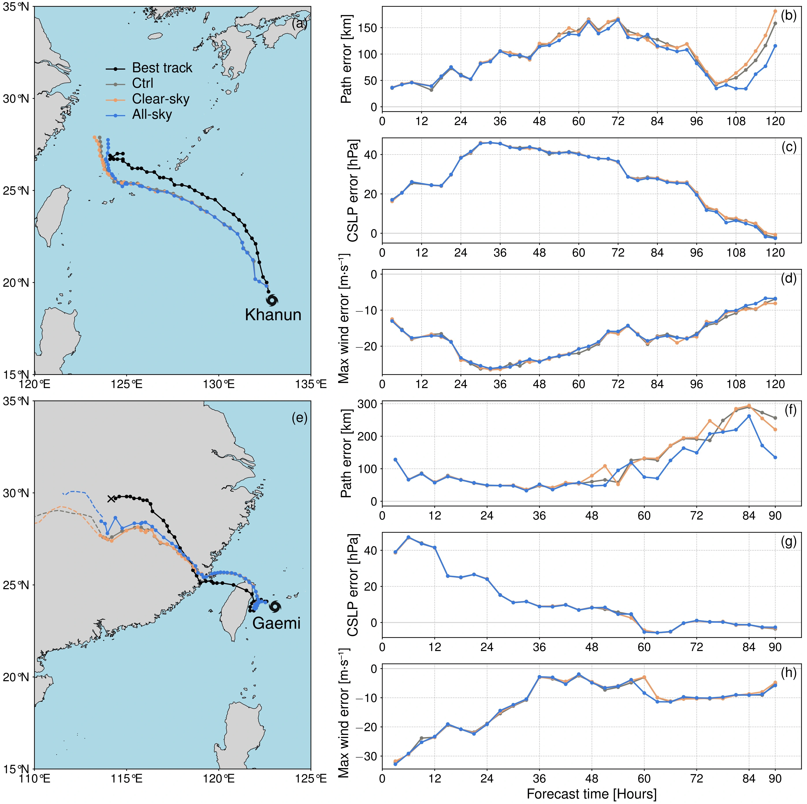
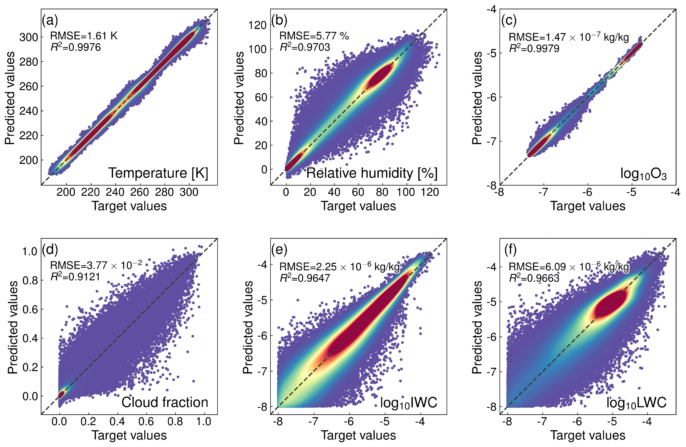
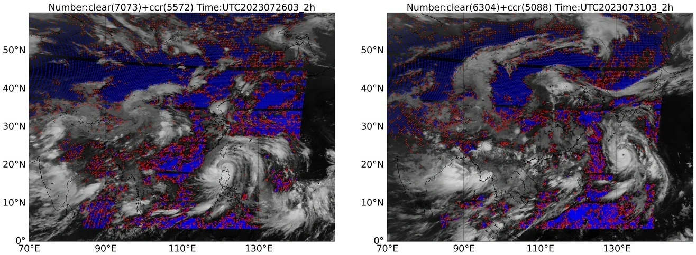
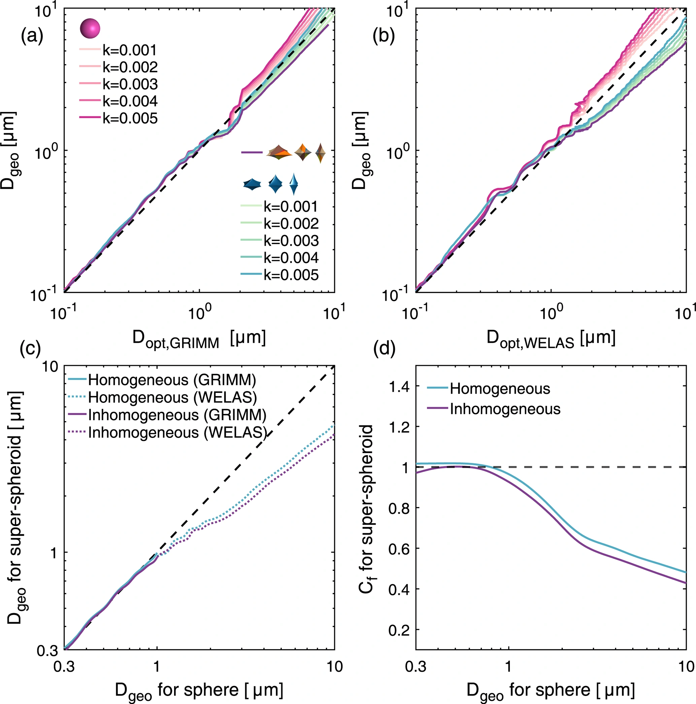
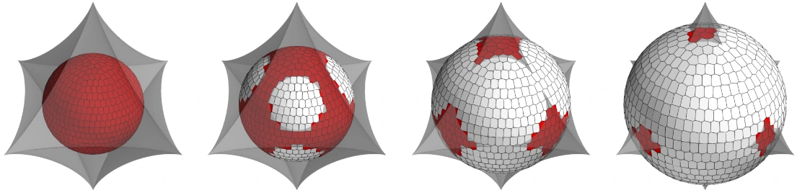
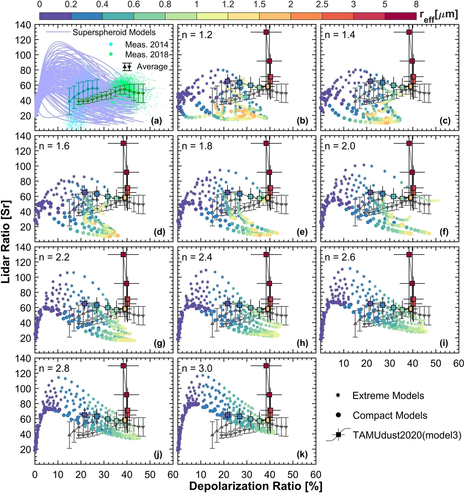

Aerosol & cloud optics
Scattering by nonspherical and inhomogeneous particles, dust optical properties, and invariant imbedding T-matrix calculations.
Atmospheric science
PhD student · School of Earth Sciences
Zhejiang University
Seeking postdoctoral or researcher positions.
I study how atmospheric particles scatter light, how satellites observe clouds and aerosols, and how these observations can improve weather prediction.
My research connects electromagnetic scattering, radiative transfer, hyperspectral retrieval, and data assimilation. I expect to complete my PhD in June 2027.
Particle physics, satellite observations, and weather prediction.
Scattering by nonspherical and inhomogeneous particles, dust optical properties, and invariant imbedding T-matrix calculations.
Hyperspectral infrared retrieval of atmospheric and cloud profiles, combining physical modelling with Bayesian methods and machine learning.
All-sky FY-4B GIIRS assimilation, radiance bias correction, observation-error modelling, and forecast evaluation in CMA systems.
For more details, please visit ResearchGate or Google Scholar.
Select a paper for a short explanation and a visual overview.
This study combines FY-4B AGRI infrared observations with CMA-MESO model fields in a Bayesian framework to reconstruct cloud water, ice, and cloud fraction in three dimensions. In a South China squall-line case, the reconstructed clouds agree more closely with brightness-temperature and radar observations. Assimilation experiments also improve the spatial representation of precipitation.
Read the paper DOI: 10.1175/WAF-D-25-0251.1ZJU-SCATT provides single-scattering properties for nonspherical and internally mixed aerosols and ice particles. It connects detailed electromagnetic calculations with remote sensing, radiative transfer, and data assimilation. A companion neural-network emulator makes the optical properties easier to use without repeating expensive scattering calculations.

Clouds make infrared observations harder to assimilate because they introduce bias, non-Gaussian departures, and correlated errors. This study develops an all-sky GIIRS workflow for CMA-GFS 4DVar, combining detector-level bias correction, a cloud-dependent error model, hydrometeor-bias correction, and error inflation. The framework enables more cloud-affected water-vapour observations to pass quality control.

The second paper evaluates the all-sky system using single-observation experiments, typhoon cases, and cycling assimilation. It reports improvements in humidity analysis and medium-range forecast skill, while short-range global effects are largely neutral. The evaluation also shows how cloud effects change the vertical sensitivity of infrared water-vapour channels.

A Bayesian method first adjusts ERA5 profiles to improve consistency with GIIRS infrared observations. Those profiles then train TERNet, a Transformer-ResNet model that retrieves temperature, humidity, ozone, and cloud properties. Independent comparisons with radiosonde and CALIPSO observations test how well the approach transfers across different weather conditions.

Cloud clearing offers another route to using infrared observations affected by clouds. This study uses an AGRI cloud mask to derive GIIRS cloud-cleared radiances, then evaluates them in a month of CMA-GFS assimilation experiments. The additional observations produce modest improvements in several analysis fields and promising forecast effects, including precipitation and typhoon cases.

This numerical study tests what happens when irregular, internally mixed dust is treated as homogeneous spheres during refractive-index retrieval. Shape and particle-sizing assumptions can bias the retrieved absorption and the optical properties calculated afterwards. The results support using consistent nonspherical models for both retrieval and downstream optical simulations.

This methods paper addresses how particle shape and internal material variation are represented in the invariant imbedding T-matrix method. A more flexible representation enables scattering calculations for particles whose geometry and composition are more complex than homogeneous spheres. It supports the physical modelling needed for atmospheric particle optics.

Dust particles are irregular, and their shape affects how lidar signals are interpreted. This study varies super-spheroid shape, size, and refractive index in scattering calculations at 355 nm, then compares lidar and depolarization ratios with NASA airborne observations. The model explains a broad range of observed dust optical behaviour.

Education, research contributions, and recognition.
Download English and Chinese CVs
Sep 2022 - Jun 2027 (expected)
Zhejiang University · School of Earth Sciences
Sep 2018 - Jun 2022
Zhejiang University
GPA 4.60/5.00; ranked 1st of 15.
Contributions to collaborative projects. Dates below describe project periods.
Jan 2025 - Dec 2028
National Natural Science Foundation of China (NSFC), Joint Fund
Participant: Investigated assimilation methods for FY-4 infrared hyperspectral satellite observations.
Jul 2023 - Jun 2026
Chinese Academy of Sciences, major research infrastructure open-access project
Participant: Computed electromagnetic scattering by large atmospheric particles.
Nov 2022 - Oct 2025
National Key Research and Development Program of China
Participant: Contributed to all-sky assimilation of geostationary hyperspectral infrared data within a global assimilation framework.
Aug 2022 - May 2025
CMA Earth System Modeling and Prediction Centre, collaborative project
Participant: Developed fast scattering models for nonspherical cloud particles in infrared hyperspectral applications.
Jul 2023 - Dec 2023
Zhejiang Institute of Meteorological Sciences, collaborative project
Participant: Worked on atmospheric profile retrieval and data assimilation for CMA-MESO.
Jan 2021 - Dec 2023
NSFC, Excellent Young Scientists Fund project
Participant: Modelled dust particles and calculated their optical properties.
[Programming languages and software tools to be added]
An iterative bias-correction method accounting for non-uniformity among satellite instrument detector elements.
Second-listed inventor · Filed December 2025
Application CN202511848925.6
Granted
For prospective collaborators and employers.
I am interested in research and postdoctoral positions in atmospheric remote sensing, Earth-system modelling, scientific algorithm development, and physics-informed machine learning.
Experience spans particle-scale numerical modelling and satellite applications, including collaborative work with meteorological research organisations.
Expected graduation
June 2027
[Preferred locations to be added]
[Code portfolio and referees to be added]
Life outside the lab
Regular exercise keeps me grounded. Music, exhibitions, and live performances make room for a different kind of curiosity.
I enjoy getting involved, supporting my peers, and sharing responsibility for the communities I belong to.
Photo journal preview Sample spaces for future photographs
A regular routine, renewed energy, and time to reset.
Time to notice details and see things differently.
A different rhythm beyond the working day.
A space for discoveries and the stories behind them.
Supporting peers and volunteering for student activities.
For research discussions, collaborations, and professional opportunities.
kongsenyi@zju.edu.cnSchool of Earth Sciences, Zhejiang University · Hangzhou, China